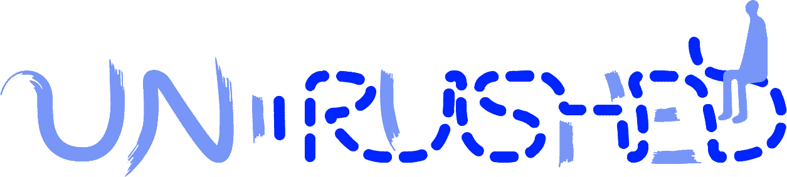

Un-The theme that defines our 2026 event. A radical act of resistance in an age of infinite speed.
Athens Conservatoire
We live in a culture of perpetual acceleration. Faster deliveries, faster decisions, faster content. We scroll before we think. We speak before we listen. We move before we know where we're going.
Un-rushed is an invitation to pause. Not forever — just long enough to ask: what are we rushing toward? What are we leaving behind? What wisdom do we lose when we never slow down to find it?
This TEDx is a space for thinkers, makers, and dreamers who dare to take their time. Who know that the best ideas don't come on demand. That depth requires patience. That presence is a form of power.
What if, this time, we didn't have to rush?
Maybe then we'd notice everything we have blindly walked past.
Because it doesn't always matter how far you get — but how truly you move, and how much of the way you actually enjoy.
Let time catch up with you, for once.
The most important ideas in history weren't rushed. Darwin spent 20 years refining his theory of evolution. Einstein daydreamed his way to relativity. When we give ideas room to breathe, they become something extraordinary.
In a world of distraction, full attention is rare. The ability to be fully present — to listen without half-composing your reply — is increasingly becoming the most valuable human skill.
Most things that feel urgent aren't. Most things that matter don't feel urgent at all. Learning to distinguish between the two is a form of wisdom that no algorithm can teach.
Rest is where ideas connect. Where the unconscious mind does its best work. The cultures and individuals that embrace rest aren't falling behind — they're building the reserves to lead.
Speakers, hosts and performers are being confirmed one by one. Every slot below fills in as we announce it — check back, or follow along on Instagram.
Join us for a day of ideas that ask you to slow down, look closer, and think deeper.